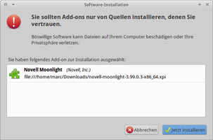
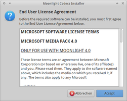

Moonlight
Archivierte Anleitung
Dieser Artikel wurde archiviert, da er - oder Teile daraus - nur noch unter einer älteren Ubuntu-Version nutzbar ist. Diese Anleitung wird vom Wiki-Team weder auf Richtigkeit überprüft noch anderweitig gepflegt. Zusätzlich wurde der Artikel für weitere Änderungen gesperrt.
Anmerkung: Die Weiterentwicklung von Moonlight wurde inzwischen eingestellt. Die letzte erhältliche Version (siehe unten) ist mit aktuellen Versionen von Firefox und Chromium nicht mehr kompatibel. Andere Browser werden nicht unterstützt.
Zum Verständnis dieses Artikels sind folgende Seiten hilfreich:
Moonlight  ist eine Implementierung von Microsoft Silverlight für Linux. Es wurde in Zusammenarbeit von Microsoft und Novell entwickelt. Im Gegensatz zu Adobe Flash ist es nicht sehr weit verbreitet. Unter anderem benötigt man es für Microsoft Office Live .
ist eine Implementierung von Microsoft Silverlight für Linux. Es wurde in Zusammenarbeit von Microsoft und Novell entwickelt. Im Gegensatz zu Adobe Flash ist es nicht sehr weit verbreitet. Unter anderem benötigt man es für Microsoft Office Live .
Zudem befinden sich lizenzierte Multimedia-Codecs im Installationspaket, damit Silverlight auch Videos abspielen kann (Smooth Streaming ). Außerdem kann man mit QuakeLight auch Quake 1 im Browser spielen. Mit dem Webclient von World Wide Telescope kann man ins All schauen.
|  |  |
| Firefox-Plugin | Codecs |
Installation¶
Bis einschließlich Ubuntu 11.04 kann Moonlight für Firefox über folgendes Paket installiert werden [1]:
moonlight-plugin-mozilla (universe)
 mit apturl
mit apturl
Paketliste zum Kopieren:
sudo apt-get install moonlight-plugin-mozilla
sudo aptitude install moonlight-plugin-mozilla
Firefox-Plugin¶
Die einzige Möglichkeit besteht in der direkten Installation des Firefox-Plugins. Dazu startet man Firefox, geht auf die Downloadseite , wählt die Architektur (32-/64-Bit) aus und klickt den Download-Link an. Dann erteilt man die Erlaubnis zur Installation. Im sich öffnenden Fenster "Jetzt installieren" wählen und anschließend den Browser zur Aktivierung neu starten.
Hinweis:
Das Firefox-Plugin (.xpi) ist deutlich aktueller als das über die Paketverwaltung erhältliche.

- Erstellt mit Inyoka
-
 2004 – 2017 ubuntuusers.de • Einige Rechte vorbehalten
2004 – 2017 ubuntuusers.de • Einige Rechte vorbehalten
Lizenz • Kontakt • Datenschutz • Impressum • Serverstatus -
Serverhousing gespendet von